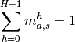

A Simple Filter¶
This example will demonstrate the importance of removing the redundancies from the regression. This notebook will
- define a simple 1D filter,
- generate influence coefficients using the filter,
- use these coefficients to calculate a response from a microstructure,
- back calculate the influence coefficients,
- compare the back calculated influence coefficients with the original,
- introduce the MKSRegressionModel class and
- show how the this class deals with redundancies.
%matplotlib inline
%load_ext autoreload
%autoreload 2
import numpy as np
import matplotlib.pyplot as plt
The autoreload extension is already loaded. To reload it, use:
%reload_ext autoreload
The filter¶
Create a filter.
def filter(x):
return np.where(x < 10,
np.exp(-abs(x)) * np.cos(x * np.pi),
np.exp(-abs(x - 20)) * np.cos((x - 20) * np.pi))
x = np.linspace(0, 20, 100)
a = plt.plot(x, filter(x))
?np.linspace
Construct the coefficients, coeff
Nbin = 2
Nspace = 81
coeff = np.linspace(0, 1, Nbin)[None,:] * filter(np.linspace(0, 20, Nspace))[:,None]
print coeff.shape
(81, 2)
Take the Fourier transform.
Fcoeff = np.fft.fft(coeff, axis=0)
Make some sample microstructures, X
Nsample = 400
np.random.seed(2)
X = np.random.random((Nsample, Nspace))
print X.shape
(400, 81)
Discretize the microstructure
H = np.linspace(0, 1, Nbin)
X_ = np.maximum(1 - abs(X[:,:,None] - H) / (H[1] - H[0]), 0)
print X_[0, 0]
print X[0, 0]
[ 0.5640051 0.4359949]
0.435994902142
Calculate the responses
FX = np.fft.fft(X_, axis=1)
Fy = np.sum(Fcoeff[None] * FX, axis=-1)
y = np.fft.ifft(Fy, axis=1).real
 is periodic in this case.
is periodic in this case.Exercise 03-0¶
Use the scipy.ndimage.convolve function to construct the y.
- look at scipy.ndimage.convove documentation
- just do the first sample
- the convolve function must be in wrap mode to be periodic
- use a small Nspace to test
- use np.roll to align the results
- check the answer with np.allclose
import scipy.signal
import scipy.ndimage
?scipy.signal.fftconvolve
y_alt = scipy.ndimage.convolve(X[0], filter(np.linspace(0, 20, Nspace)), mode='wrap')
print np.allclose(np.roll(y_alt, 40), y[0])
True
Calculate the influence coefficients using the regression¶
Use the binned microstructure, X_, and the repsonses, y to recalculate the coefficients.
model_Fcoeff = np.zeros((Nspace, Nbin), dtype=np.complex)
for i in range(Nspace):
model_Fcoeff[i] = np.linalg.lstsq(X_[:,i], y[:,i] )[0]
model_coeff = np.fft.ifft(model_Fcoeff, axis=0)
for b in range(Nbin):
plt.figure()
plt.plot(coeff[:,b], label='orignal')
plt.plot(model_coeff[:,b], label='MKS')
plt.legend()
The calculated influence coefficients are not even close to the originals. What’s going on? The equation,

is not being taken into account. Using this, we can rewrite the convolution as
![\begin{split}
p_{a,s} &= \sum\limits_{h=0}^{H - 1} \sum\limits_{t=0}^{S-1} \alpha_t^h m_{a,s + t}^h \\
&= \sum\limits_{t=0}^{S-1} \left[ \sum\limits_{h=0}^{H - 2} \alpha_t^h m_{a,s + t}^h +
\alpha_t^{H-1} \left( 1 - \sum\limits_{h=0}^{H - 2} m_{a,s+t}^h \right) \right] \\
&= \sum\limits_{t=0}^{S-1} \alpha_t^{H - 1} +
\sum\limits_{h=0}^{H - 2} \sum\limits_{t=0}^{S-1} \left(\alpha_t^h - \alpha_t^{H-1} \right) m_{a,s + t}^h \\
&= b_0 + \sum\limits_{h=0}^{H - 2} \sum\limits_{t=0}^{S-1} b_t^h m_{a,s + t}^h
\end{split}](../_images/math/5dd5c5082ebb6398d286fc6ca73e7e7065c31184.png)
This removes the redundancies from the regression. Coding this in 1D is easy, we simply replace
for k in range(Nspace):
model_Fcoeff[k] = np.linalg.lstsq(X_[:,k], y[:,k] )[0]
with
for k in range(Nspace):
if k == 0:
model_Fcoeff[k] = np.linalg.lstsq(X_[:,k], y[:,k] )[0]
else:
model_Fcoeff[k,:-1] = np.linalg.lstsq(X_[:,k,:-1], y[:,k] )[0]
Introducing the MKSRegressionModel¶
The MKSRegressionModel takes a test microstructure X and a test response y in any dimension and does a linear regression to determine the influence coefficients. So,
model = MKSRegressionModel(Nbin=10)
model.fit(X, y)
After the fit, the predict method can be used to fit new data.
y_predict = model.predict(X_predict)
The MKSRegressionModel inherits from Scikit-learn’s LinearRegression class so that we can start doing cross validation in the next tutorial.
from pymks import MKSRegressionModel
??MKSRegressionModel
model = MKSRegressionModel(Nbin=2)
model.fit(X, y)
model.coeff = np.fft.ifft(model.Fcoeff, axis=0)
model.coeff = -(model.coeff - model.coeff[0, 1])[:,::-1]
for b in range(Nbin):
plt.figure()
plt.plot(model.coeff[:,b], label='MKSRegressionModel')
plt.plot(coeff[:,b], label='original')
plt.legend()

The model.coeff needed rearranging as the MKSRegressionModel coefficients are using the coefficients that have the redundancies removed.
Exercise 03-1¶
Create a random sample and check that using scipy.ndimage.convolve to create the responses gives the same result as the MKSRegressionModel.
- Use np.roll to align the result from scipy.ndimage.convolve
- Use np.allclose to compare.